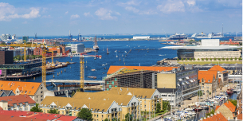
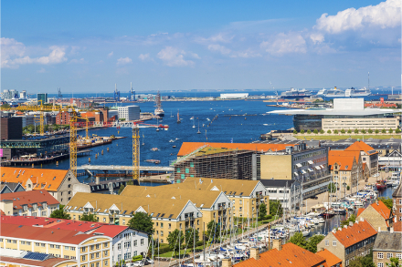

Tour de France-ruten i København 2022 er klar
Verdens største cykelløb, Tour de France, kommer til verdens bedste cykelby i sommeren 2022. København er den officielle start-by, og nu er ruten gennem byens gader klar.
Mest læste
Distortion: Gadefestivallen er rykket til august grundet COVID-19 Københavns Private Gymnasium ansætter nye FIFA-trænere Tour de France-ruten i København 2021 er klar Zulu Awards: Alt hvad der skete Nu åbner københavns museum
Fredag steg københavnernes regning for udligning pludselig til 1,6 milliarder
Regningen for en ny udligningsreform bliver langt større for en række hovedstadskommuner, viste nye beregninger fredag. Nu er kender flere af hovedstadens borgmestre, at de er nødt til at hæve skatten.